Everything in section D of your notes is built except the part you said not to touch. The small candle box (the lens) now shows 4-hour candles on the 3-day pages and 30-minute candles on the daily pages, and it finds the emptiest dark spot instead of sitting in one corner. The grey "last bar" stamp is gone. The Geiger bar has its own spot. The charts start under the ticker. The crosshair price is bigger and shows the % from the current price. SPY/QQQ and ES/NQ are one page.
Branch station/fixes-20260927, started from the live Station at 1981096. Not pushed and not deployed. Nothing on the live Station has changed yet. The pictures come from a headless browser on this MacBook (never on your screen) using real chart-API data. The chart API only answers scintillahub.ai, so the test browser's requests were passed through a small local relay that asks with that address. Read-only; nothing was written anywhere.
| Your note | What it does now |
|---|---|
| Lens: commas in numbers | 1,085 not 1085; 30,892 for NQ. |
| Lens: don't repeat the ticker | The ticker is gone from the lens. The badge already names it. |
| Lens: drop WED/THU/FRI | Gone. A small gap between candles still shows where one day ends. |
| Lens: "30M" label optional | Kept as a small grey tag (4H or 30M), because the 3-day pages and daily pages now show different candles. It is one line to remove (decision 1). |
| Lens: 4h on 3-day charts | 4-hour candles, last 12 sessions = 48 candles (about 2½ weeks). The provider's 4-hour bars start at 04:00, 08:00, 12:00 and 16:00 New York time, four a day, so 12 sessions lands inside your 40–60. |
| Lens: 30-minute on DAILY charts | 30-minute candles, last 3 sessions (39 candles), on SPY + QQQ · DAY, OTHER INDEXES · DAY and · RSI, and TARGETS · DAY and · RSI. |
| Lens: weekly macro pages none | No lens on either weekly page. I also left it off MACRO · DAY, because intraday for macro is on your "do not change" list (decision 2). |
| Lens: seek the emptiest dark space | It checks about 60 spots across the chart and takes the one with the least drawn on it. Clouds count as drawn, and the price line counts extra. Bottom-left wins when it is about as empty as anywhere. It never sits in the newest fifth of the chart or on the badge. Once placed, it stays unless another spot is clearly emptier, so it does not jump around. |
| Lens: mark on the date axis | A small grey ▲ under the chart where the lens's first candle falls. |
| Lens loads slower than the rest | Its code now starts loading when the chart opens, not after the price has drawn. See section 3 for what the measurement actually showed. |
| Remove the grey "last bar" stamp | Gone. When a chart is really stale during a session, an amber warning appears in the badge: STALE · last bar 25 Sep · 4 d old. The rules for "stale" are the same as before. |
| Geiger bar bunches on 8-up | It is out of the badge and sits in the chart's dark space, just under the badge when that spot is empty. It never covers the lens, the badge or the newest fifth. |
| Charts crammed to the top; grey things at the top | The chart now starts under the badge, like TradingView: 8% headroom above the high and 6% below the low. The badge lost its grey border. The DETAIL badges are gone. The small expand square only appears when the pointer is over that chart (on a touch screen it stays). |
| Crosshair price bigger + % to cursor | The price label is 11 px bold. Beside it is the % from the current price to the cursor's level: green above, red below. |
| ES/NQ page then SPY/QQQ page, back to back | One page, SPY + QQQ · DAY. It shows SPY/QQQ from 09:30 to 16:30 New York time on weekdays and ES/NQ otherwise (the same clock as before), with the RSI fan in both. The old SPY + QQQ · RSI page is gone, and a browser that remembered it lands on the one page. The lap is 21 pages now, not 22. |
| DETAIL button | Gone from the wall's charts. Double-clicking a chart's title and the menu entries still open it, and ?detail=1 brings the badge back. |
| Clouds load slowly | The clouds' saved copy in the browser is now about a quarter of the size. The old copy filled the browser's store after about 79 names. The lap cycles 75, alongside every price copy, so a wall that had run a while kept throwing clouds away and drawing them from scratch. The request queue now serves prices first, then clouds, then the lens, then the RSI fan. |
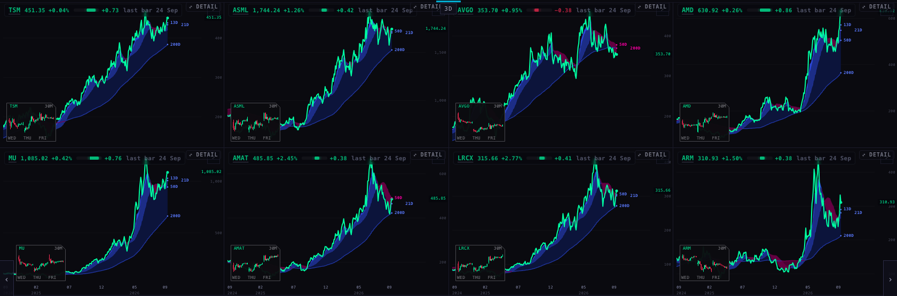
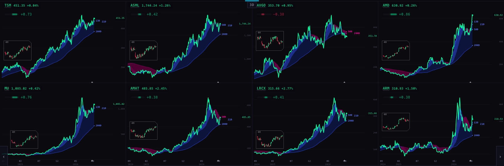
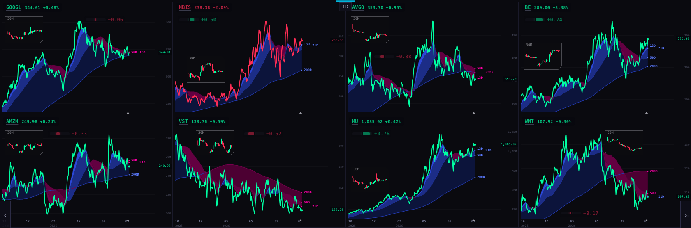
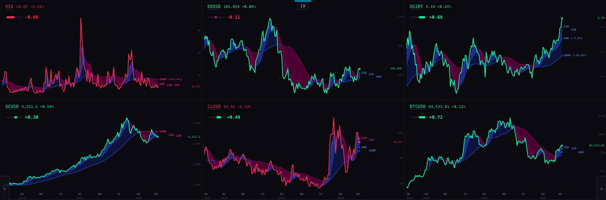
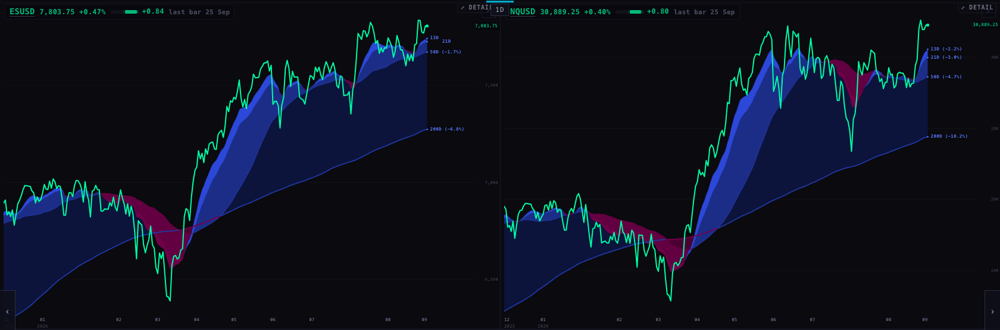
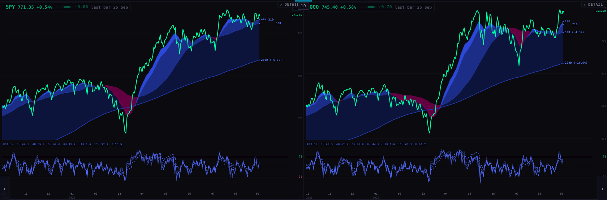
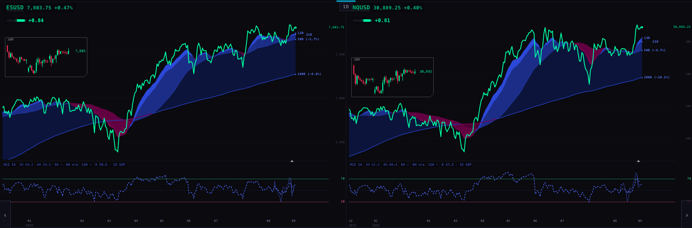
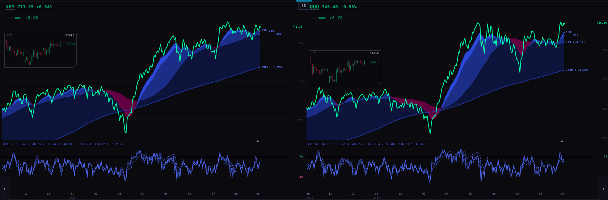
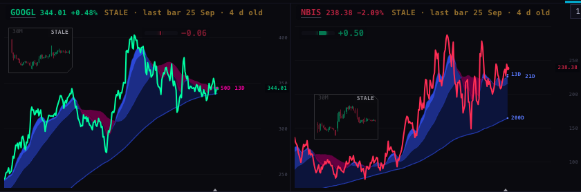
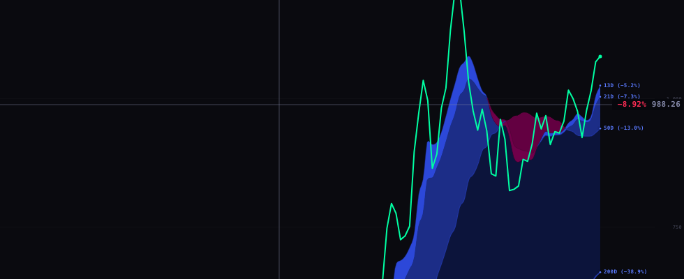
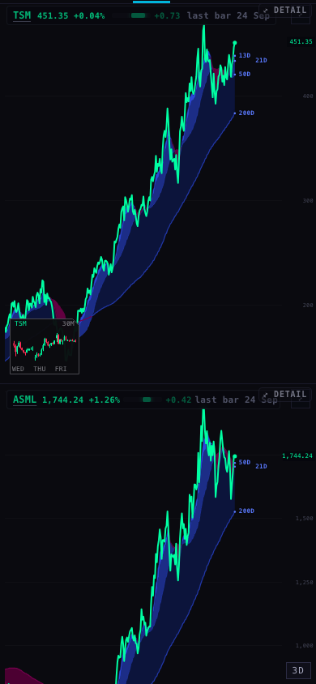
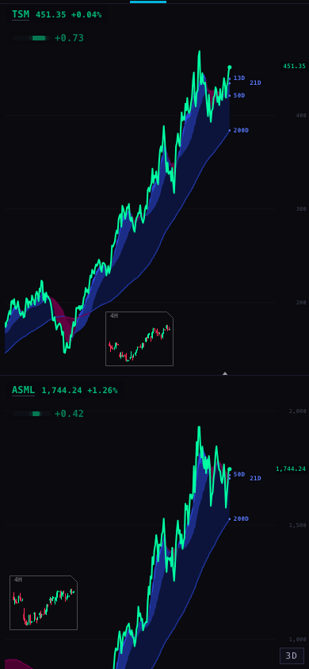
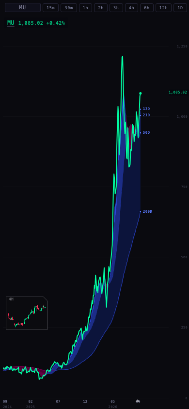
This was measured on a stand-in for the iMac: headless Chrome with the processor slowed 4×, empty browser storage, and the same recorded chart data for before and after, each request delayed 300 ms. There were 5 runs each, and the table shows the middle one. The iMac itself was not touched.
| Page | All prices drawn | All clouds drawn | All lenses drawn | Processor busy | |
|---|---|---|---|---|---|
| AI 1 (8 charts, 3-day) | before | 1.49 s | 1.91 s | 1.49 s | 1.42 s |
| after | 1.51 s | 2.16 s | 1.51 s | 1.54 s | |
| TARGETS · RSI (8 charts, daily, RSI fan) | before | 1.46 s | 2.18 s | no lens | 1.57 s |
| after | 1.53 s | 2.37 s | 1.53 s | 1.80 s |
Raw runs: cpu-runs.json. Scripts: harness/ (perf.mjs, lap.mjs, count.mjs, quota.mjs, evidence.mjs).
/candles?tf=240 and tf=30). One read per chart, repeated at most every 10 minutes. Nothing is computed from them except their position on screen.(level ÷ current − 1) × 100.